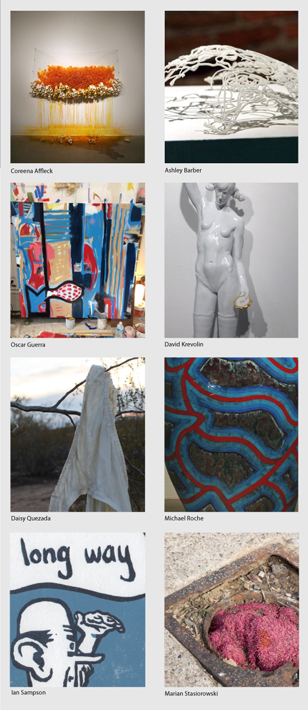

YOU DESERVE TO BE HAPPY
May 2014
Friday, May 16, 2014
Little Berlin is pleased to host the 2014 University of Delaware MFA thesis exhibition, the culmination of two years of dedicated studio practice and conversations with each other, faculty, and visiting artists. These works range across a broad spectrum, but all reflect where each artist’s thinking has evolved of the course of their time at the university. Each has pulled from their unique histories to develop work that represents their vision of the time in which we live.
